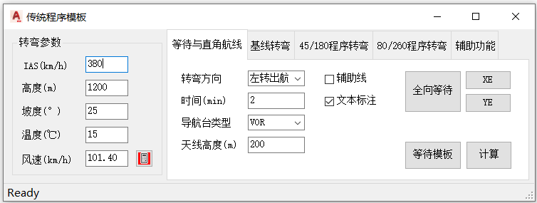
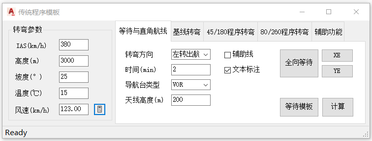
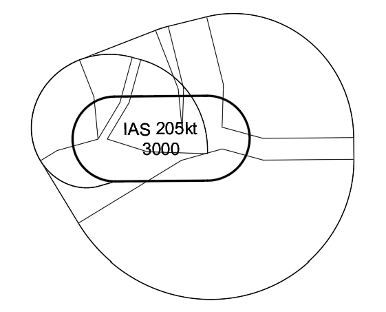
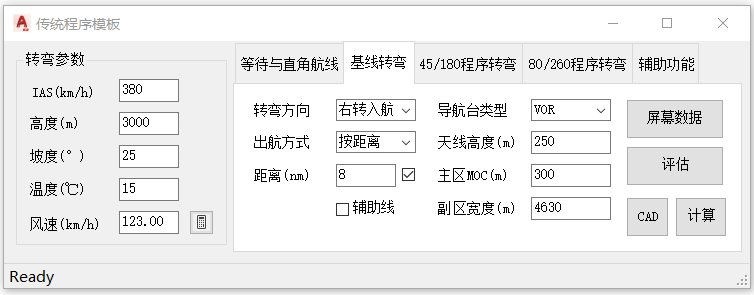
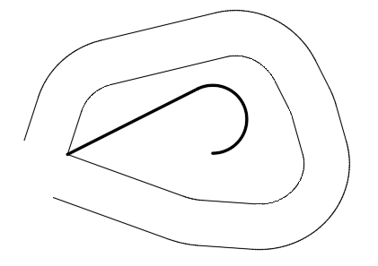
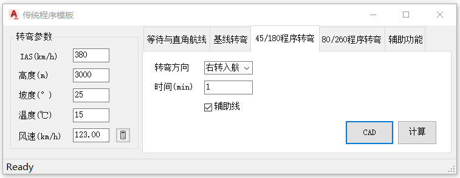
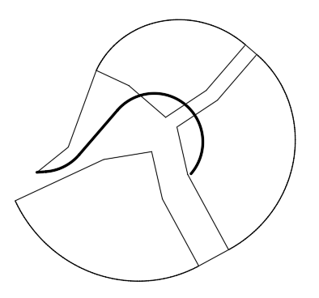
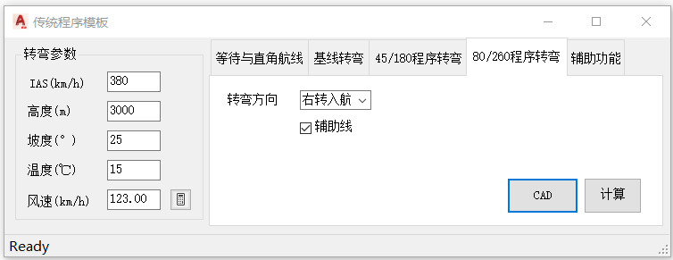
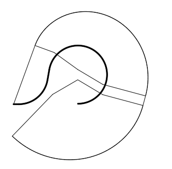

功能简介
【传统保护区模板】集成传统（Conventional）程序的常用模板：等待与直角航线、基线转弯（Base Turn）、45°/180° 程序转弯、80°/260° 程序转弯。可按参数计算并绘制对应模板，用于传统程序作图。
界面预览

公共元素：转弯参数面板与通用操作
窗口左侧为四个选项卡共用的【转弯参数】面板，所有模板的转弯半径均由该面板参数计算得出：
| 参数 | 默认值 | 说明 |
|---|---|---|
| IAS(km/h) | 380 | 指示空速 |
| 高度(m) | 900 | 模板对应的海拔高度 |
| 坡度(°) | 25 | 转弯坡度 |
| 温度(℃) | 15 | ISA的温度偏差 |
| 风速(kt) | 97.8 | 风速；点击右侧按钮自动计算ICAO标准风。 |
通用操作步骤
- 命令行输入
Y06_传统模板打开窗口。 - 在左侧【转弯参数】面板填写IAS、高度、坡度、温度、风速。
- 切换到需要的模板选项卡，填写该模板专有参数。
- 点【计算】在命令行核对参数结果，再点【CAD】或对应模板按钮绘制。
- 按需勾选【文本标注】【辅助线】。
提示：等待程序转弯方向下拉项为“左转出航 / 右转出航”，其余程序按入航方向分为“左转入航 / 右转入航”。
选项卡一：等待与直角航线
界面截图

参数说明
| 控件 | 默认值 | 说明 |
|---|---|---|
| 转弯方向 | 左转出航 | 出航转弯方向：左转出航 / 右转出航。 |
| 时间(min) | 1 | 出航边飞行时间（分钟）。 |
| 导航台类型 | VOR | VOR / NDB，决定顶空盲区的大小。 |
| 天线高度(m) | 0 | 导航台天线标高。 |
| 文本标注 | 关 | 勾选后在模板中标注文字。 |
| 辅助线 | 关 | 勾选后随模板绘制辅助风螺旋线。 |
按钮功能
| 按钮 | 功能 |
|---|---|
| 【全向等待】 | 绘制以导航台为中心的全向等待保护区（含 X / Y 进入范围）。 |
| 【XE】 | 绘制 X轴 进入（平行进入）时的最远边界线。 |
| 【YE】 | 绘制 Y轴 进入（偏置进入）时的最远边界线。 |
| 【等待模板】 | 绘制标准等待（直角航线）模板。 |
| 【计算】 | 仅计算等待模板参数并输出到命令行，不绘图。 |
操作步骤
- 选择转弯方向（左转出航 / 右转出航），填写出航时间。
- 选择导航台类型并填写天线高度。
- 点【计算】在命令行核对参数，或直接点【全向等待】/【XE】/【YE】/【等待模板】绘制。
- 按需在图中拾取绘制基点。
效果示例

选项卡二：基线转弯
界面截图

参数说明
| 控件 | 默认值 | 说明 |
|---|---|---|
| 转弯方向 | 右转入航 | 入航转弯方向：左转入航 / 右转入航。 |
| 出航方式 | 按距离 | 按距离 / 按时间；选择出航方式后，在下方输入“距离(nm)”或“时间(min)”。 |
| 距离(nm) / 时间(min) | 10 | 出航边距离或时间；可以用鼠标指定或手工输入。 |
| 导航台类型 | VOR | VOR / NDB。 |
| 天线高度(m) | 0 | 导航台天线标高。 |
| 主区MOC(m) | 300 | 主区超障余度。 |
| 副区宽度(m) | 4630 | 副区宽度。 |
| 辅助线 | 关 | 勾选后随模板绘制辅助风螺旋线。 |
操作步骤
- 选择转弯方向与出航方式（按距离 / 按时间）。
- 填写出航距离（或时间）、导航台类型、天线高度。
- 按需修改主区 MOC 与副区宽度。
- 点【计算】核对参数，再点【CAD】绘制基线转弯保护区。
效果示例

选项卡三：45/180程序转弯
界面截图

参数说明
| 控件 | 默认值 | 说明 |
|---|---|---|
| 转弯方向 | 右转入航 | 左转入航 / 右转入航。 |
| 时间(min) | 1 | 出航边飞行时间（分钟）。 |
| 辅助线 | 关 | 勾选后随模板绘制辅助风螺旋线。 |
按钮功能
| 按钮 | 功能 |
|---|---|
| 【计算】 | 仅计算模板参数并输出到命令行，不绘图。 |
| 【CAD】 | 绘制 45°/180° 程序转弯模板。 |
| 【包络线】 | 选择图中已绘制的多条模板多段线，合并生成包络保护区。 |
操作步骤
- 选择转弯方向，填写出航时间。
- 点【计算】核对参数，再点【CAD】绘制模板。
- 如需合并多个模板，点【包络线】并选择已绘制的多段线。
效果示例

选项卡四：80/260程序转弯
界面截图

参数说明
| 控件 | 默认值 | 说明 |
|---|---|---|
| 转弯方向 | 右转入航 | 左转入航 / 右转入航。 |
| 辅助线 | 关 | 勾选后随模板绘制辅助风螺旋线。 |
提示：80°/260° 程序转弯的出航时间由 80° 几何关系确定，无需单独输入。
按钮功能
| 按钮 | 功能 |
|---|---|
| 【计算】 | 仅计算模板参数并输出到命令行，不绘图。 |
| 【CAD】 | 绘制 80°/260° 程序转弯模板。 |
| 【包络线】 | 选择图中已绘制的多条模板多段线，合并生成包络保护区。 |
操作步骤
- 选择转弯方向。
- 点【计算】核对参数，再点【CAD】绘制模板。
- 如需合并多个模板，点【包络线】并选择已绘制的多段线。
效果示例
